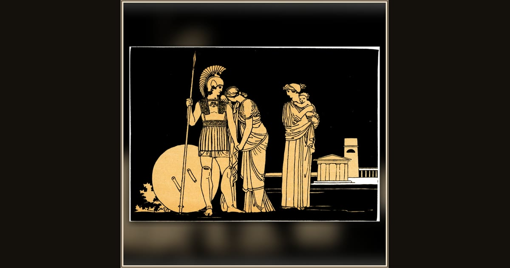

The Meeting of Hector and Andromaché
John Flaxman (illustrator); Alfred John Church (1895 book author) · 1895 · Wikimedia Commons
At the Scaean gate, Andromache meets Hector while a maid carries their infant son (6.392–400). Explore its place in Homer's Iliad, Book VI, line 394.